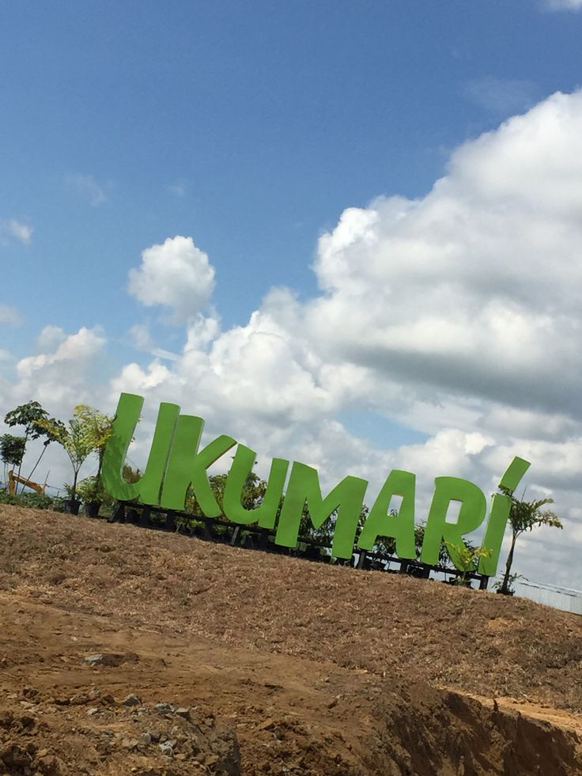

Descubre Risaralda
Risaralda, en el corazón del Eje Cafetero, es un departamento reconocido por su riqueza natural, aguas termales y parques naturales. Pereira, su capital, es un destino turístico y empresarial que conecta fácilmente con ciudades cercanas y rutas cafeteras.
En A&G TOURS ofrecemos transporte turístico y corporativo en Risaralda, facilitando el acceso a atractivos como el Bioparque Ukumarí, el Santuario de Flora y Fauna Otún Quimbaya y las rutas cafeteras que hacen parte del Paisaje Cultural Cafetero.
Nuestro compromiso es brindar experiencias de turismo en Risaralda seguras, puntuales y de alta calidad, tanto para visitantes nacionales como internacionales.
Pereira y su modernidad
Pereira es el centro económico y cultural de Risaralda, destacada por sus parques, monumentos y la hospitalidad de su gente. Además, es un excelente punto de partida para recorrer la región.


Santa Rosa de Cabal
Este municipio es famoso por sus termales y cascadas rodeadas de naturaleza. Un lugar ideal para relajarse y disfrutar de aguas minerales en un entorno único.
Viaducto César Gaviria Trujillo
Una de las obras de ingeniería más importantes del país, símbolo de la conexión entre Pereira y Dosquebradas. Un ícono arquitectónico del Eje Cafetero.


Megacable de Pereira
Un moderno sistema de transporte aéreo que conecta la ciudad con zonas urbanas y rurales, brindando una experiencia única en movilidad y turismo.
Bioparque Ukumarí
El Bioparque Ukumarí es uno de los atractivos más visitados de Risaralda. Diseñado como un zoológico moderno, recrea hábitats naturales de África y América, permitiendo la conservación y educación ambiental mientras los visitantes observan animales en espacios abiertos.
Santuario de Fauna y Flora Otún Quimbaya
Esta reserva natural es ideal para los amantes del ecoturismo. Alberga una gran biodiversidad, con especies de aves únicas y senderos rodeados de bosque húmedo andino, convirtiéndose en un refugio natural del Paisaje Cultural Cafetero.
¡Contáctanos!